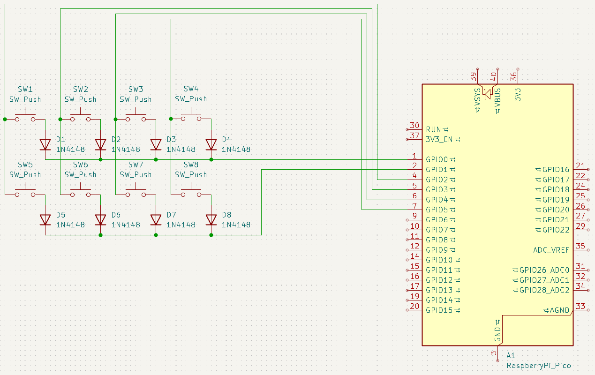

A custom macro pad on a 2-layer KiCad PCB with an integrated Raspberry Pi Pico.
KiCad
Raspberry Pi Pico
Arduino
PCB Design/Fabrication
Analog Circuit Design
TypeSelf-directed hardware project
TimelineJuly 2026 to present
StatusLayout complete, fabrication planned
Hero image: 3D render from KiCad or a photo of the board
Overview
I designed an 8-key mechanical macro pad as a self-directed project, covering the full path from circuit prototype to board layout. [Add one sentence on why you built it.]
Hardware design
2-layer PCB in KiCad with an integrated Raspberry Pi Pico, a keyswitch layout, and a diode-isolated matrix.
Hand-routed the traces and verified electrical rules and layout integrity so the layout is ready for production.
Placed a 1N4148 switching diode on each key to prevent ghosting currents and keep signals clean when several keys are pressed at once.

Schematic
PCB layout
Firmware
The Pico scans the key matrix by rows and columns, so eight keys need only six GPIO pins: each row and each column has its own pin. I prototyped the circuit in Wokwi and wrote Arduino firmware for the shortcuts. [Add how you tested it.]
Results and next steps
[What works so far, what you learned, and your plan for ordering and assembling the board.]